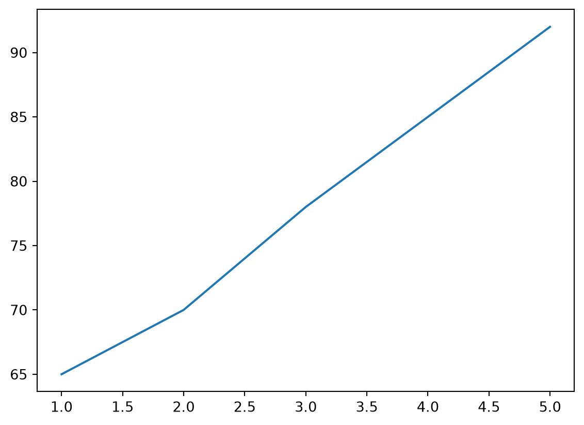
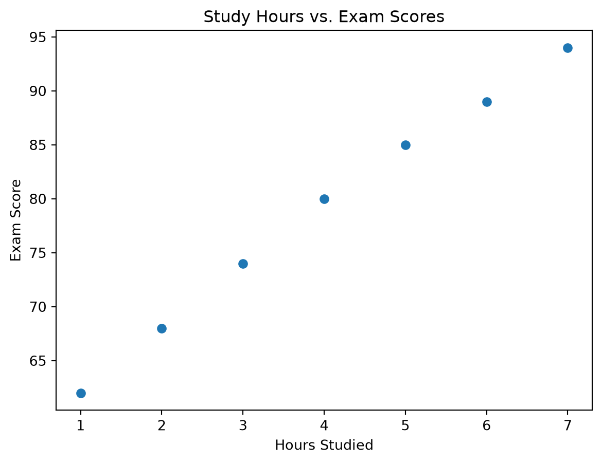
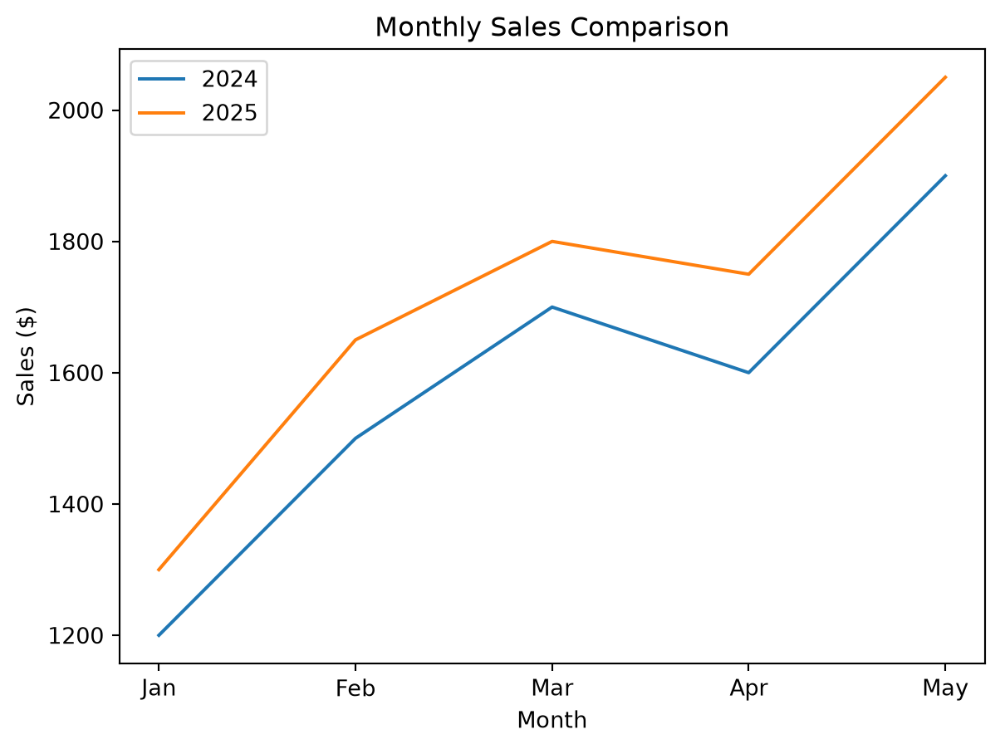
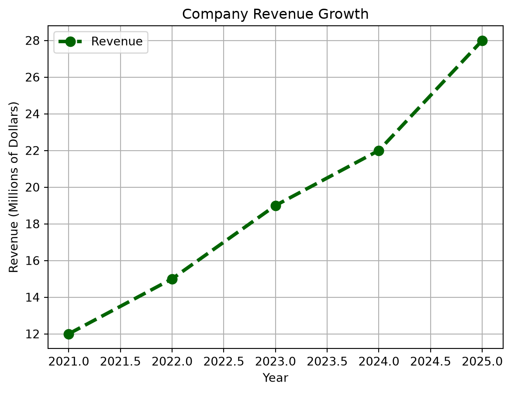

import matplotlib.pyplot as plt
# Example data: hours studied and quiz scores
hours = [1, 2, 3, 4, 5]
scores = [65, 70, 78, 81, 92]
# Create a basic line plot
plt.plot(hours, scores)
# Display the graph
plt.show()
Data is only as powerful as your ability to communicate it. While tables of numbers can contain valuable insights, it is often difficult to identify patterns, trends, and relationships by looking at raw data alone. Visualization helps transform data into a story that is easier to understand and share.
‘Matplotlib’ is one of the most widely used data visualization libraries in Python. It provides a simple way to create clear, customizable plots for exploring and presenting data. In this tutorial, you will learn the basics of creating plots with Matplotlib, choosing the right visualization for your data, and improving your charts with labels and styling.
To begin using Matplotlib, install the package and import it into your Python environment. It is commonly imported using the alias plt.
Once imported, you can create a variety of visualizations. Most plots follow the same general workflow:
import matplotlib.pyplot as plt
# Example data: hours studied and quiz scores
hours = [1, 2, 3, 4, 5]
scores = [65, 70, 78, 81, 92]
# Create a basic line plot
plt.plot(hours, scores)
# Display the graph
plt.show()
Before creating a visualization, think about the message you want to communicate. Different questions require different types of plots.
For example, exploring the relationship between two variables requires a different visualization than showing the distribution of a single variable. Consider the type of data you are working with. Are your variables numerical or categorical? Are they discrete or continuous? Answering these questions will help you choose the most effective visualization.
Each type of plot serves a different purpose. Selecting the right one helps your audience understand the story your data is telling.
Matplotlib supports many different visualization types. Some of the most common include:
Other useful plot types include:
The best plot depends on the question you are trying to answer and the data you have available.
import matplotlib.pyplot as plt
# -------------------------
# Scatter Plot
# -------------------------
# Use a scatter plot when you want to see the relationship
# between two numerical variables.
study_hours = [1, 1, 2, 2, 2, 3, 4, 4, 5, 6, 7]
exam_scores = [62, 70, 68, 74, 84, 80, 85, 89, 79, 94, 91]
plt.scatter(study_hours, exam_scores)
plt.title("Study Hours vs. Exam Scores")
plt.xlabel("Hours Studied")
plt.ylabel("Exam Score")
plt.show()
# -------------------------
# Bar Chart
# -------------------------
# Use a bar chart when comparing categories.
majors = ["Statistics", "CS", "Math", "Biology"]
students = [45, 62, 28, 35]
plt.bar(majors, students)
plt.title("Students by Major")
plt.xlabel("Major")
plt.ylabel("Number of Students")
plt.show()
# -------------------------
# Histogram
# -------------------------
# Use a histogram when examining the distribution
# of a single numerical variable.
test_scores = [
65, 67, 68, 70, 72, 73, 74, 75,
77, 78, 80, 81, 83, 85, 87, 90,
91, 93, 95, 98
]
plt.hist(test_scores, bins=5)
plt.title("Distribution of Test Scores")
plt.xlabel("Score")
plt.ylabel("Frequency")
plt.show()
Even the most informative graph can be confusing without proper labels. To communicate your findings clearly, every plot should include descriptive titles and axis labels.
A good title explains the overall purpose of the visualization. Axis labels identify which variables are being displayed and their units when appropriate. If multiple datasets are shown on the same graph, a legend should be included so readers can easily distinguish between them.
Clear labeling makes visualizations more professional and ensures that others can correctly interpret your results.
import matplotlib.pyplot as plt
# Monthly sales data
months = ["Jan", "Feb", "Mar", "Apr", "May"]
sales_2024 = [1200, 1500, 1700, 1600, 1900]
sales_2025 = [1300, 1650, 1800, 1750, 2050]
# Plot two lines
plt.plot(months, sales_2024, label="2024")
plt.plot(months, sales_2025, label="2025")
# Add a descriptive title
plt.title("Monthly Sales Comparison")
# Label the x-axis
plt.xlabel("Month")
# Label the y-axis
plt.ylabel("Sales ($)")
# Add a legend so readers know which line is which
plt.legend()
# Display the figure
plt.show()
Matplotlib also allows you to customize the appearance of your plots. Common aesthetic adjustments include changing colors, marker styles, line thickness, and line styles.
Thoughtful styling can make a visualization easier to read and more visually appealing. For example, using contrasting colors can help highlight important data, while adjusting marker sizes can make dense scatter plots easier to interpret. Consistent styling across multiple figures can also create a more professional appearance in reports and presentations.
import matplotlib.pyplot as plt
# Example data
years = [2021, 2022, 2023, 2024, 2025]
revenue = [12, 15, 19, 22, 28]
# Customize color, line style, marker, and line width
plt.plot(
years,
revenue,
color="darkgreen", # Changes line color
linestyle="--", # Dashed line
marker="o", # Circular markers
linewidth=3, # Thicker line
markersize=8, # Larger markers
label="Revenue"
)
# Add a grid to improve readability
plt.grid(True)
# Add labels and title
plt.title("Company Revenue Growth")
plt.xlabel("Year")
plt.ylabel("Revenue (Millions of Dollars)")
plt.legend()
# Show the finished plot
plt.show()
When creating visualizations, beginners often focus on making graphs look attractive while overlooking clarity. A common mistake is choosing a plot type that does not match the data. For example, using a line plot for unrelated categories may suggest a trend that does not actually exist.
Another frequent issue is overcrowding a graph with too much information. Too many colors, labels, or plotted variables can make an otherwise useful visualization difficult to read. It is usually better to keep a chart simple and emphasize the most important information.
Finally, always check that your axes are labeled correctly and that your title accurately describes the figure. Small details like missing labels or unclear legends can cause confusion and make it harder for readers to understand your results. Clear communication should always be the primary goal of data visualization.
Now that you understand the basics of Matplotlib, you are ready to begin creating your own visualizations in Python. Start by experimenting with a simple dataset and creating several different plot types. Then practice adding descriptive labels and customizing the appearance of your graphs.
The best way to improve your visualization skills is through practice. Try recreating charts you see in articles or reports and consider what design choices make them effective. As you become more comfortable with Matplotlib, you will be able to create clear, informative visualizations that help others understand your data.